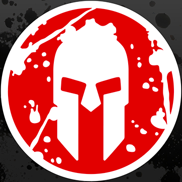
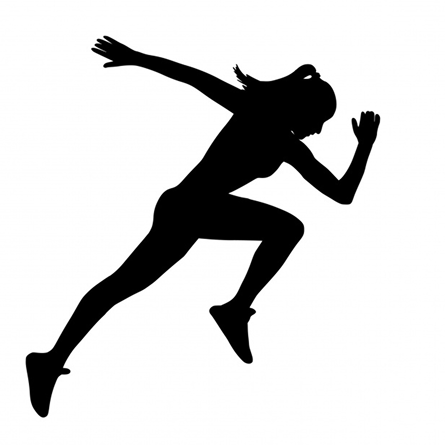
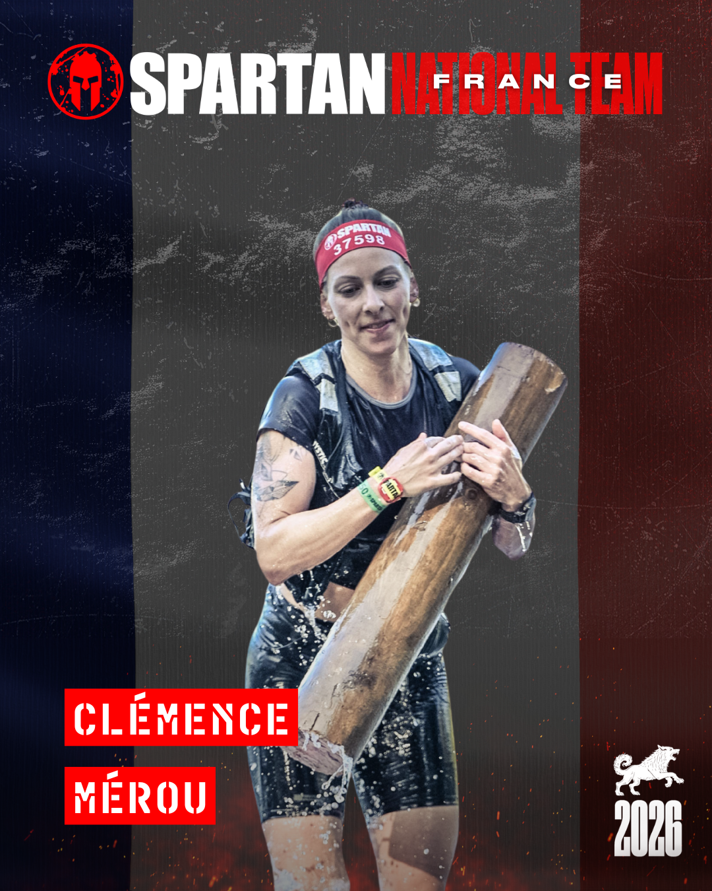
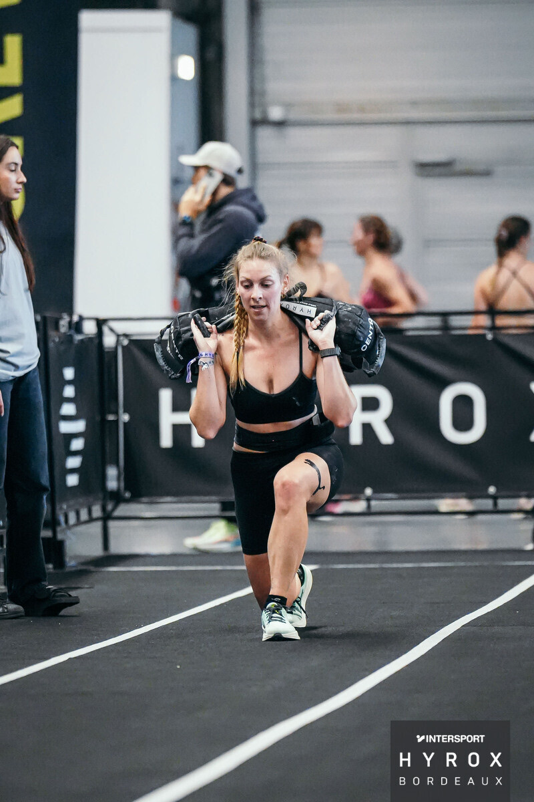
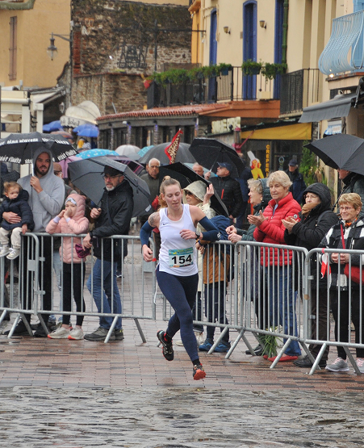
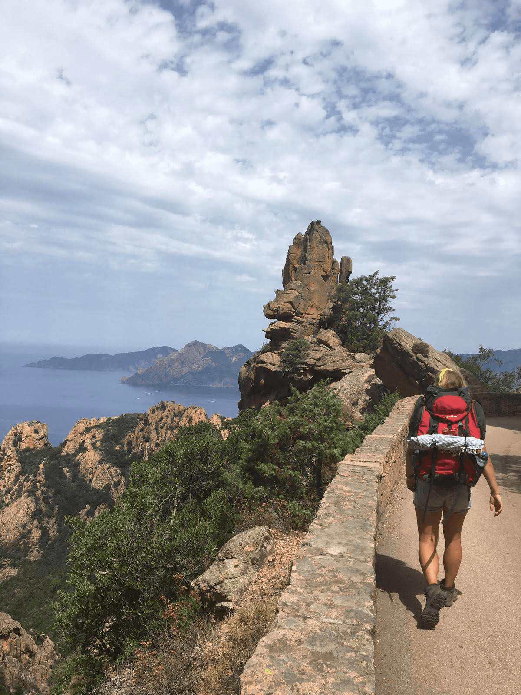
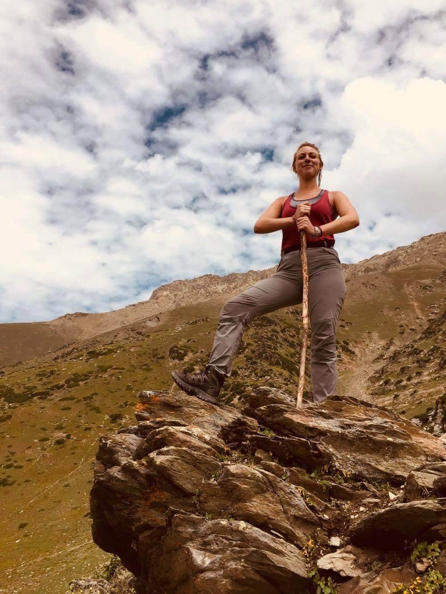
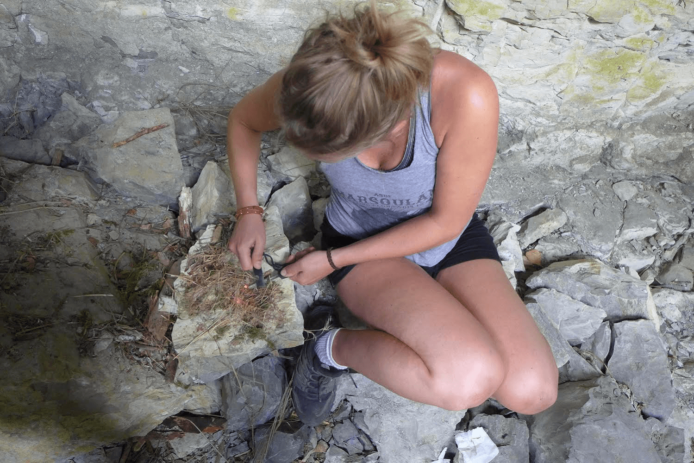

Athlète
J’ai toujours été attirée par les environnements qui bousculent et poussent à aller plus loin.
En arrivant à Paris pour mes études, je décide d’explorer pleinement cette énergie en m’inscrivant dans un club de boxe française, tout en continuant à pratiquer d’autres sports à côté et en découvrant également la course à pied.
Très vite, ce besoin de mouvement évolue vers des formats plus engagés. Je me lance dans des treks en autonomie, parfois sur plusieurs centaines de kilomètres, avec un sac de 15 à 20 kg, en totale immersion.
Ces expériences forgent mon endurance, ma résilience et mon goût pour les environnements exigeants. Elles m’amènent naturellement vers des disciplines hybrides, qui combinent plusieurs pratiques.
En 2019, je découvre le crosstraining ainsi que le parcours d'obstacles. C’est un tournant : un format complet, mêlant force, agilité, endurance et stratégie.
Je m’investis alors pleinement dans cette discipline, progressant année après année jusqu’à intégrer aujourd’hui l’équipe de France de Spartan Race.
Cette progression m’a aussi permis de comprendre concrètement ce que demandent la performance et la constance, et comment ces exigences peuvent se transposer dans d’autres projets, bien au-delà du sport.
En parallèle, je développe également mon niveau en Hyrox, une discipline exigeante qui complète parfaitement ma préparation hivernale. Ces 3 dernières années, je me qualifie pour les championnats du monde en catégorie double pro femmes.
Aujourd’hui, le sport est bien plus qu’une pratique : c’est un cadre exigeant qui structure ma manière de travailler, de progresser et de m’engager dans chaque projet que j'entreprends.
Disciplines

Spartan Race
Course à obstacles combinant endurance, force, équilibre et agilité. Intégration de l’équipe de France en 2026.
Hyrox
Format hybride mêlant course et exercices fonctionnels, demandant intensité et régularité. Qualification aux championnats du monde en double pro 2024, 2025 et 2026.

Trail & endurance
Courses toutes distances et treks en autonomie, développant endurance, gestion de l’effort et capacité d’adaptation.



Plus que la performance, c’est une manière de se construire dans l’effort.
Qu’il s’agisse de compétition ou d’expéditions en autonomie, chaque expérience renforce des qualités clés : gestion de l’effort, prise de décision, résilience et discipline.
Expériences complémentaires
Treks longue distance en autonomie, stages de survie et immersion en milieu naturel viennent prolonger cette approche du sport dans des contextes plus bruts et imprévisibles. Ces expériences renforcent l’adaptabilité, la gestion des ressources et la capacité à prendre des décisions efficaces en conditions réelles.



Résultats
Podiums Elite séries Nationales Spartan Race :
– 3ère Beast Carcassonne 2026
Podiums Elite Spartan Race :
– 1ère Beast Orte 2026
– 1ère Beast Santa Susanna 2025
– 2e Super Carcassonne 2024
– 2e Super Estérel 2023
Podium (3e) Championnat d’Europe Spartan Race Beast (Age Group 30 - 34) – 2025
Hyrox Double Femmes :
– 3e AG / 3e overall – Nice 2026 - 1h03 (Pro)
– 1ère AG / 2e overall – Toulouse 2025
– 2e AG / 3e overall – Turin 2024 (Pro)
Multiples podiums en trail et courses régionales (formats courts à intermédiaires)
Championne départementale de boxe française
Ces performances traduisent une progression construite dans le temps, fondée sur l’exigence, la constance et l’engagement.
Un projet, une collaboration ou un défi à construire ?
Échanger ensemble